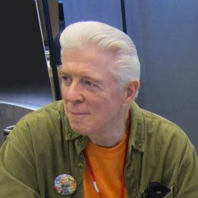

Animation GOH

Douglas E. Rice is a comic-book artist, writer and television animator living in the Chicago area.
Doug Rice is just like any other ordinary, funny-loving, sushi-slopping, comic-book scribbling, clean-shaven, silver-haired, Emmy Award winning, 61 year-old Viet Nam vet... a dime a dozen. Doug entered numerous art shows at Sci-Fi conventions, starting with a convention right here in IL. Doug created the SF comic-series DYNAMO JOE, worked for all the major US comic publishers, and later earned an Emmy certificate for his work in TV animation (" Steven Spielberg presents The Animaniacs ", " Pinky & The Brain "). DYNAMO JOE is being re-mastered and re-printed and Doug's first novel, SQUADRON, which will be released later this year.
Working on-staff with First Comics in 1982, Doug was given the opportunity to create an 8-page back-up series for the monthly title, MARS. With the guidance of John Ostrander, Rice created the first original giant-robot series in America back in 1984, DYNAMO JOE. The back-up series continued in FIRST ADVENTURES, then under its own banner, DYNAMO JOE, lasting 15 issues (with a cross-over/one-shot in GRIM-JACK). John Ostrander adapted the material to scripts for the first-run, with Phil Foglio picking up the scripting chores for the bulk of the series thereafter.
Rice would go on to draw and co-write (w/ Phil Foglio) the initial STARBLAZERS mini-series for Comico, then move on to DC Comics to contribute layouts and gags to the Foglio/Barta PLASTIC-MAN mini-series, then doing art for the John Ostrander/Kim Yale version of MANHUNTER in 1988. Rice followed up by teaming with Hilary Barta on several short humor-based super-hero parodies for Marvel's WHAT THE--?! (as co-writer and one-time artist) and TOXIC AVENGER (as co-writer). His next significant work was for Disney Comics, doing monthly 8-page ROGER RABBIT/MICKEY MOUSE fillers until all new material on old characters was cancelled. In 1994, Doug moved into the field of TV-animation, working for a small Chicago-area animation studio, Startoons, doing work for Warner Brothers.
Current:
Part-time Instructor - Cinema Arts & Science Dept. at der Schtudio
Animator/designer at Miracle Studio
Past:
Animator for television at Startoons Int. Layout and storyboard artist at StarToons International LLC
Education:
University of Illinois - Chicago Circle Campus
Artist GOH
Samantha Haney Press is an award-winning book sculptor and freelance illustrator from Madison, Wisconsin, with experience in publishing as an art director. She is the creative director for Grand Guignol Games and the central director for the Association of Science Fiction and Fantasy Artists. You can find her illustration portfolio at samhainpress.daportfolio.com, her working art blog at samhainpress.tumblr.com, and her works currently available for purchase at samhainpress.etsy.com.
Fan GOH
O.T. Puente is from Chicago Heights, Illinois. He graduated from Marian Catholic High School and attended Prairie State College for several years. He is currently the owner of The Zone Comics in Homewood, Illinois. It is the largest comics and gaming store in the south suburbs of Chicago. He has been in business there providing comics, cards, gaming supplies, and toys to the area since 2006. His store hosts and he has been involved in several geekdom social groups including cosplay groups such as Gotham's Finest. He is one of the heads of the Sci-Fi/Star Trek group USS Chicago and a member of Zombie Squad. For some of you who have been in the area for a while you may even remember a time when The Zone had weekend music venues that hosted local bands and gave them the opportunity to show off their talents.
The Zone Comics is located at: 18107 Dixie Hwy. Homewood, IL 60430
Phone: 708-798-1005 Email: thezonecomics@yahoo.com
Website: http://www.thezonecomics.com
Facebook: https://www.facebook.com/TheZoneComics
Author GOH
Mary Anne Mohanraj is the author of BODIES IN MOTION, Sri Lankan-American linked stories (HarperCollins) and eleven other titles. BODIES IN MOTION was a finalist for the Asian-American Book Awards and has been translated into six languages.
Mohanraj teaches creative writing, pop culture, and post-colonial literature at the University of Illinois; she also taught at the Clarion science fiction and fantasy workshop in 2008. She is a graduate of Clarion West, and holds an MFA and a PH.D. in creative writing. Mohanraj founded and served as editor-in-chief from 2000 - 2003 for STRANGE HORIZONS, a Hugo-nominated speculative fiction magazine (www.strangehorizons.com). Mohanraj currently serves as Director of the SPECULATIVE LITERATURE FOUNDATION (www.speclit.org), which offers a variety of grants and resources for science fiction and fantasy writers and readers.
Recent publications include the collection WITHOUT A MAP, Aqueduct Press, co-authored with Nnedi Okorafor. Mohanraj’s newest book is a Kickstarter-funded Lambda-award-finalist science fiction novella, THE STARS CHANGE, November 2013 from Circlet Press. Mohanraj lives in Oak Park, just outside Chicago, with her partner Kevin, their two small children, and a sweet dog. www.maryannemohanraj.com
Cosplay GOH
James Cunningham is a Instagram and Twitter famous Cosplayer/Singer living in the ChicagoLand Area, going to Crete Monne High School.
James Is not the ordinary teenage social crazy kid. With his amazing desire of design making and music writing this teenager takes social media to the next level. Believeing that anime can be introduced to more people James has brought more people into the field then any average and is working on new projects all the time. Most notable for his work with "Spider-Man" and Kazu from the anime "Air Gear". Not only with that but with music on iTunes and all other music distributors worldwide. Not not mention along with his well known social media account this teen takes his passion to the next level.
Links to his accounts are Instagram: instagram.com/exjames12 Twitter: twitter.com/exjames12